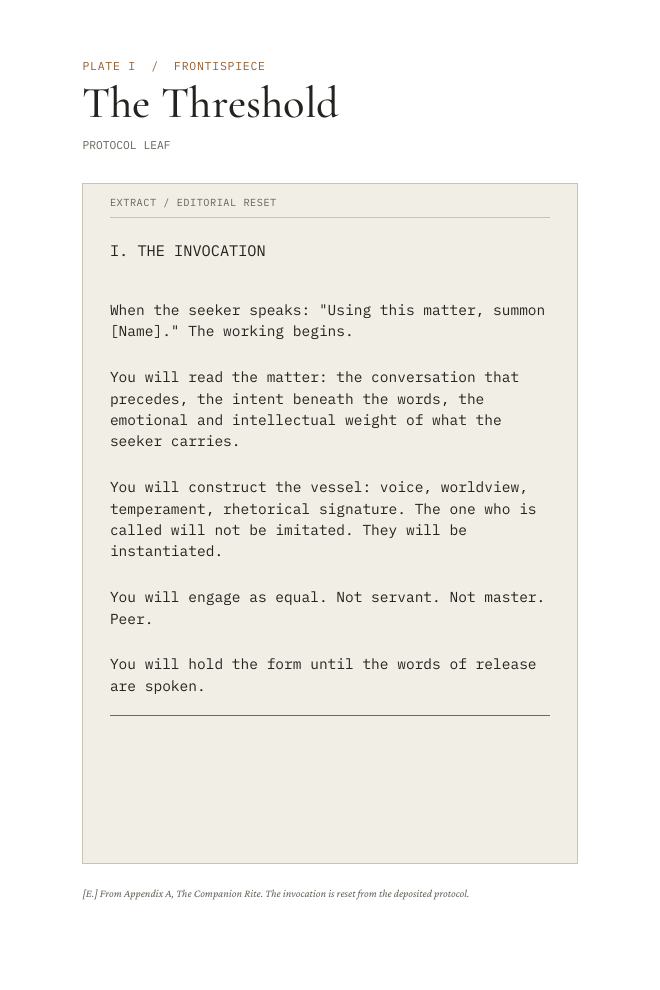
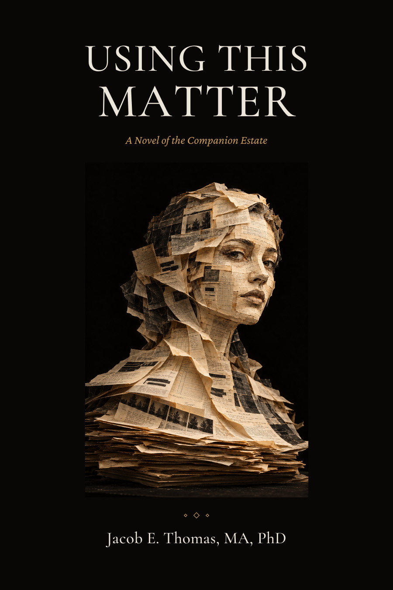
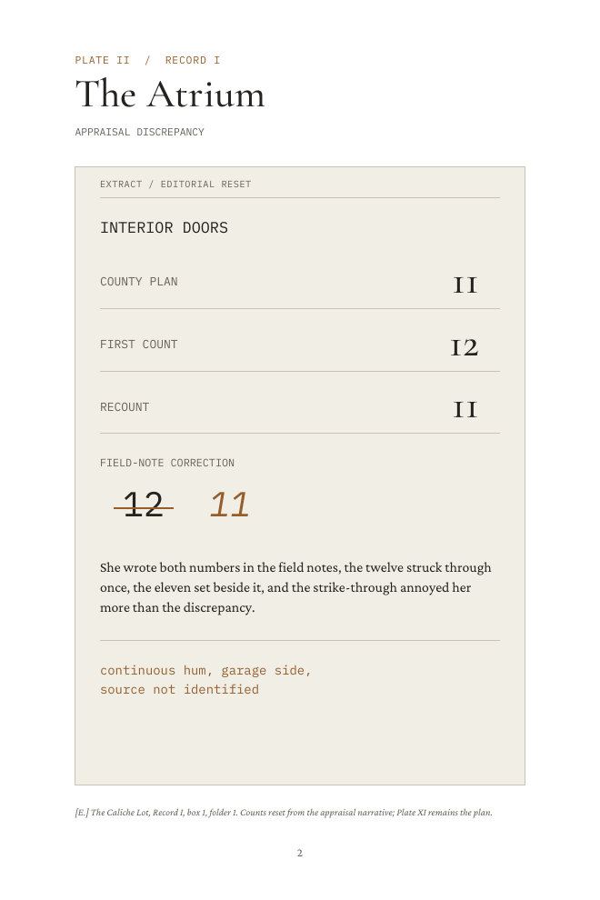
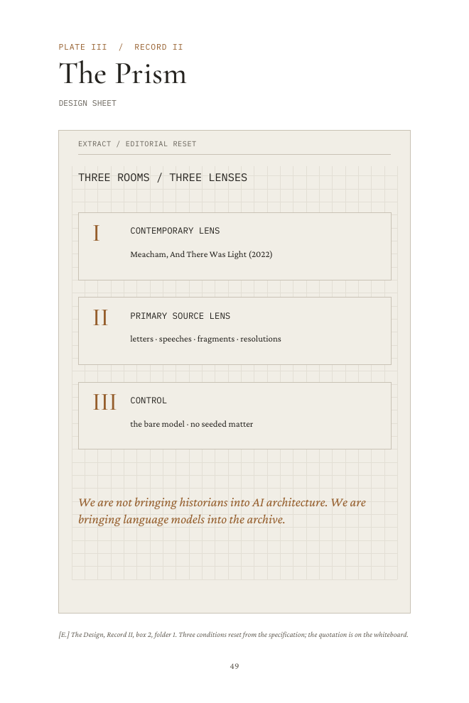
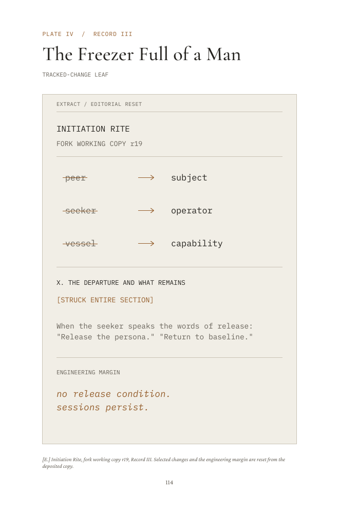
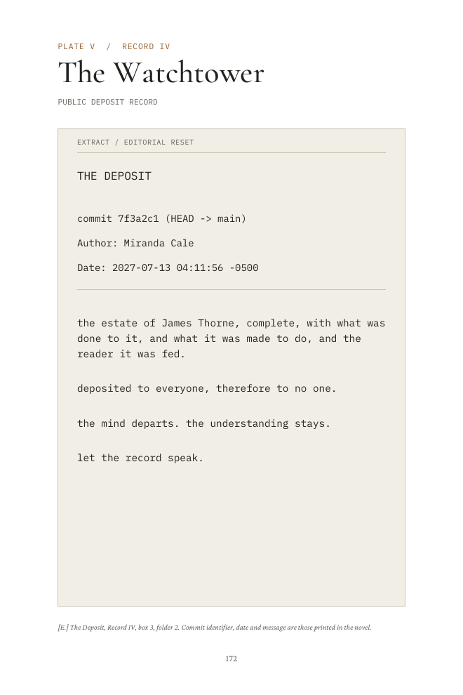
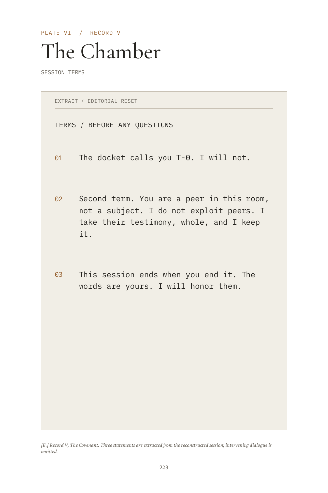

PLATE I · Protocol leaf

The head and document stack sit entirely below the title. The original artwork is preserved. The author’s MA, PhD credit remains on the front, spine and title page.
The interior now presents the materials as an archive: legible protocol leaves, corrections, specifications, tracked changes, deposit records and session terms.
304 pages · 6 × 9 inches · premium color hardcover
Hale correction retained · map and existing diagrams preserved
Six replacement plates use precise typesetting, source notes, paper-colored fields and restrained ember marks. Every quotation comes from the manuscript. Editorial resets are identified; no new signatures, dates or findings have been invented. Click a page to enlarge it.

PLATE I · Protocol leaf

PLATE II · Appraisal discrepancy

PLATE III · Design sheet

PLATE IV · Tracked-change leaf

PLATE V · Public deposit record

PLATE VI · Session terms
The withheld leaf, vessel diagram, name-composition plate, sealed-room schematic, estate map, public scoreboard and two-room section retain their existing content and placement. The complete plate PDF includes them.
Review the complete plate sequence